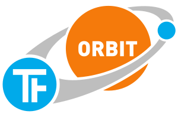

ORBIT Online-Dokumentation¶
ORBIT ist ein Python-Anwendungsrahmen für TinkerForge-Anwendungen
Es ermöglicht dialogbasierte Systeme durch ein einfaches Konzept von Apps und Services. Es unterstützt eine robuste Anwendungsarchitektur durch wiederverwendbare Komponenten und die Entkopplung von Anwendungsteilen mit Hilfe eines Nachrichtensystem. Die Verwaltung der Verbindung zu TinkerForge-Bricks und -Bricklets übernimmt ein Gerätemanager, dadurch wird das Entwickeln von Anwendungen, die mit Verbindungsabbrüchen umgehen müssen, stark vereinfacht.
Version: 0.2.0
Erstellt am: 26.10.2024
Dieses Projekt wird nicht von der TinkerForge GmbH entwickelt, sondern ist ein unabhängiges Projekt von Tobias Kiertscher.
ORBIT wird unter der LGPL-3.0 zur Verfügung gestellt.
Diese Dokumentation ist auch als PDF-Version verfügbar.